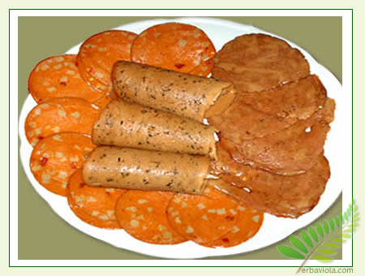

Vegetariani e vegani
| 
|
| Essere vegani significa essere gente speciale, o almeno gente che
cerca di diventare tale, ponendo a se stessa degli obiettivi
sicuramente avanzati e superiori rispetto alla normalità.
Essere vegani significa capirsi al volo, parlare la stessa lingua,
sentire gli stessi sentimenti di amore per noi stessi e la natura che
ci circonda, nonostante le nostre diversità etniche e culturali.
Essere vegani significa pensare, fare, mangiare, comportarsi in
particolari e distinti modi, non per snobismo o per moda, ma perché
noi umani siamo davvero creature dotate di motori biochimici e
spirituali fuori del comune, per cui siamo obbligati a procurare
carburanti speciali per i nostri propulsori.
I vegani dunque non mangiano carne e pesce, come i vegetariani, ma a differenza di un vegetariano non utilizzano neppure alcun prodotto ne' si cibano di alimenti prodotti attraverso un qualsiasi sfruttamento diretto di animali.
La parola vegan fu coniata nel 1944 da Elsie Shrigley e Donald Watson, fondatori della Vegan Society. Shrigley e Watson dichiararono di essere insoddisfatti dell'uso comune della parola "vegetariano" per riferirsi a diete che includevano latte, uova e derivati, e coniarono la nuova denominazione prendendo le prime e ultime lettere del termine inglese vegetarian, con l'indicazione che il veganismo era "l'inizio e la fine del vegetarianesimo".
La Vegan Society fornisce la seguente definizione di veganismo: La parola "veganismo" denota una filosofia e un modo di vita che si propone di escludere - nella misura in cui questo è praticamente possibile - tutte le forme di sfruttamento e di crudeltà verso gli animali perpetrate per produrre cibo, indumenti o per qualsiasi altro scopo; e per estensione, promuove lo sviluppo e l'uso di alternative non-animali, per il bene dell'uomo, degli animali e dell'ambiente. Da un punto di vista dietetico indica la pratica di evitare qualsiasi prodotto derivato, in tutto o in parte, dagli animali.
|
| Pagina Creata da Luis Pardo |